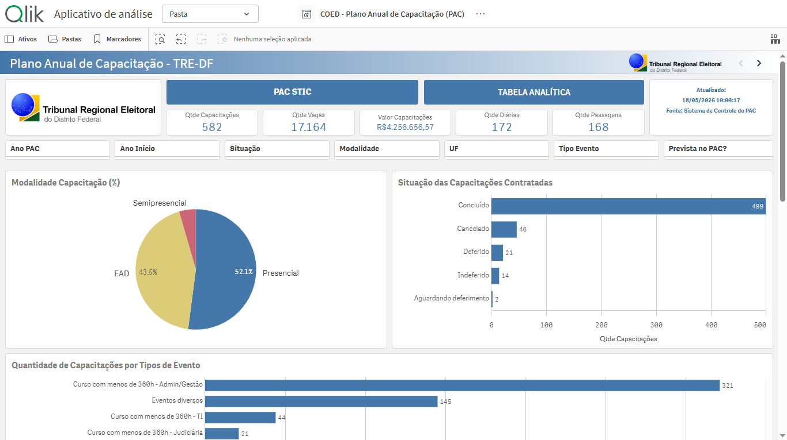
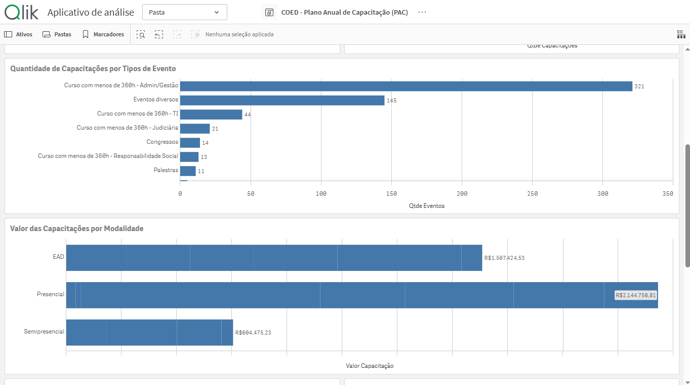
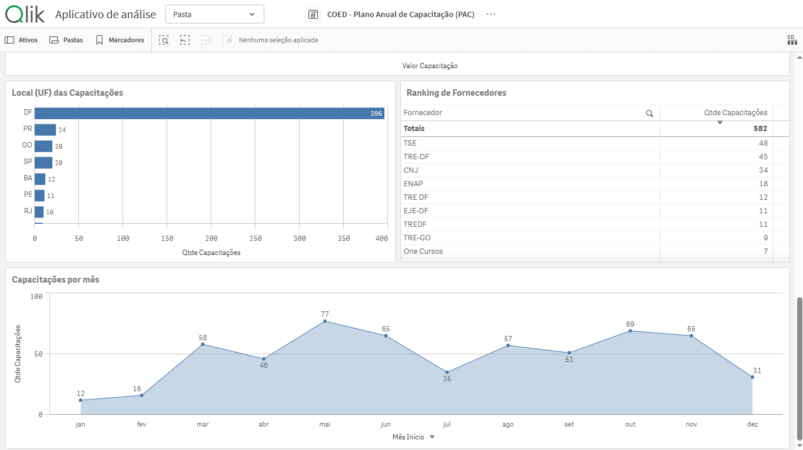
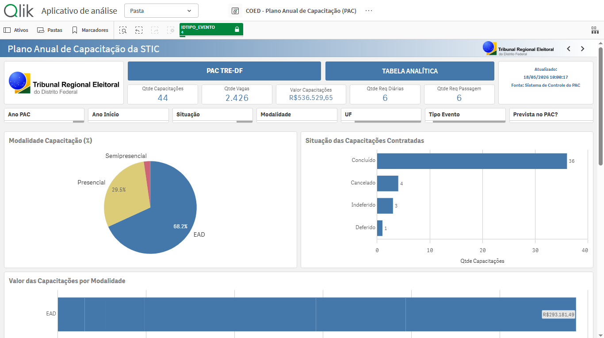
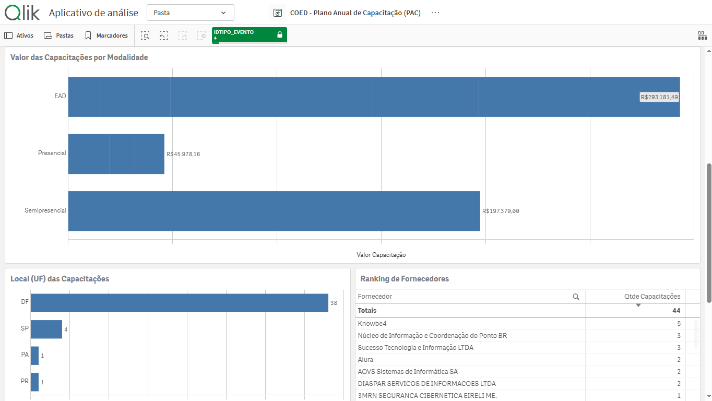
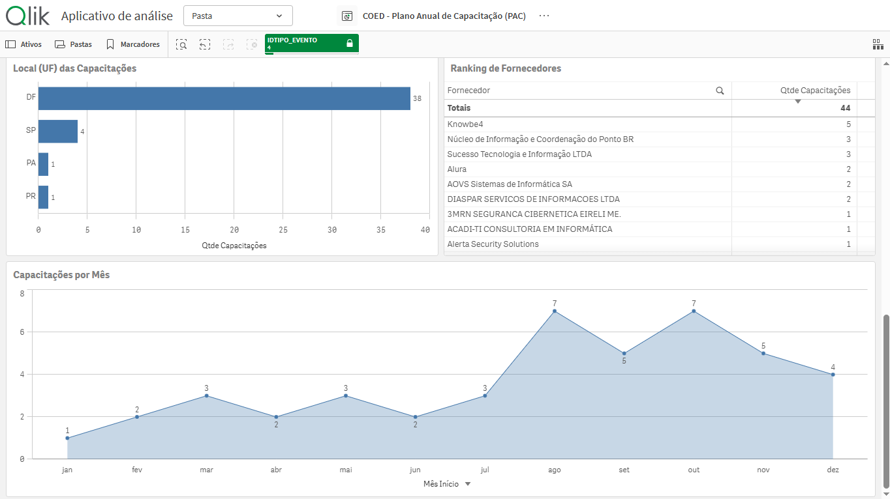
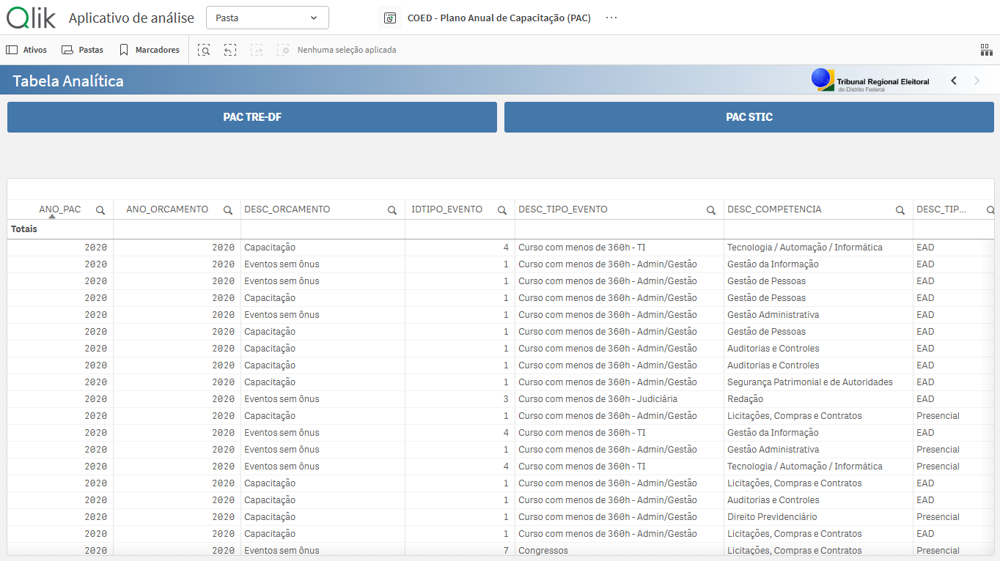

Painel interativo desenvolvido em Qlik Sense para acompanhamento dos Planos Anuais de Capacitação do Tribunal Regional Eleitoral do Distrito Federal, integrando KPIs, gráficos analíticos, filtros dinâmicos e tabelas voltadas à análise das capacitações, incluindo visualizações específicas para profissionais da área de TI.
Dashboard Oficial
Indicadores gerais dos planos de capacitação, utilizando KPIs e visualizações interativas para acompanhamento de vagas, capacitações, valores investidos, diárias e passagens.

Gráficos analíticos voltados à comparação das capacitações por tipo de evento e análise dos valores investidos em cada modalidade de capacitação.

Gráficos analíticos voltados à distribuição geográfica das capacitações, ranking de fornecedores e acompanhamento mensal das capacitações realizadas.

Painel analítico direcionado aos profissionais de TI, composto por visualizações comparativas das modalidades e da situação das capacitações contratadas.

Gráficos analíticos direcionados aos profissionais da área de TI, permitindo análise comparativa das capacitações por tipo de evento e acompanhamento dos investimentos por modalidade de capacitação.

Visualizações segmentadas para a área de TI, voltadas à distribuição geográfica das capacitações, análise de fornecedores e acompanhamento mensal das capacitações realizadas.

Tabela analítica interativa para acompanhamento detalhado das informações e indicadores relacionados às capacitações.